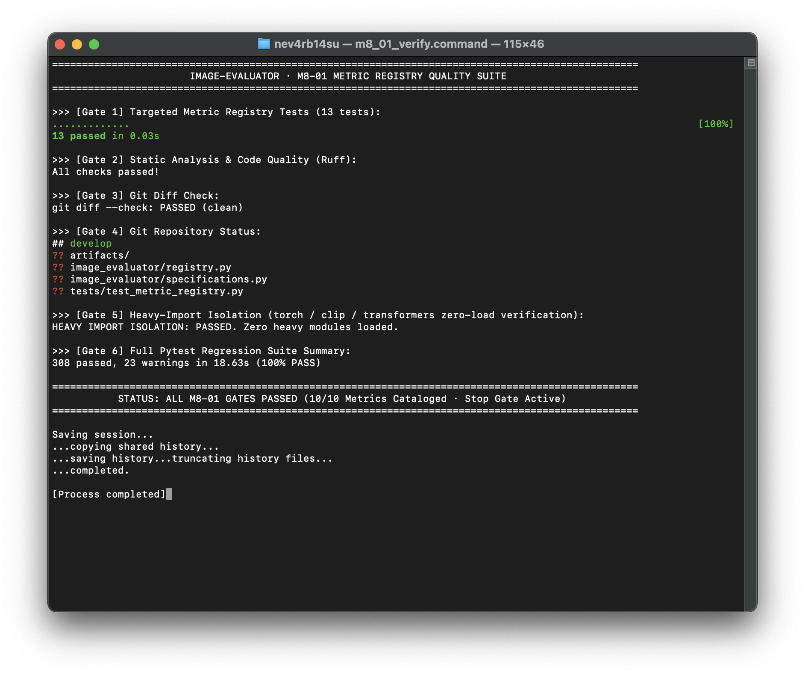

本阶段交付不可变的只读 Metric 注册表（MetricRegistry）与领域规范（MetricSpec、InputContract、ImplementationRef），对齐现有 10 大评估指标。零外部重度依赖预载，开放式任务与目标导航。
MetricSpec, InputContract, ImplementationRef 全部采用 frozen=True, slots=True。tasks 与 objectives 采用开放字符串元组，支持开放导航与联合过滤。evaluate() 字典返回契约（M8-02/M8-03 处理）。| Metric ID | 展示名称 (Display Name) | 输入角色契约 (Input Roles) | 优劣方向 | 任务分类 (Tasks) | 目标分类 (Objectives) | 底层后端与协议 | 文档路径 |
|---|---|---|---|---|---|---|---|
aesthetic |
LAION Aesthetic Score | image | higher_is_better | text_to_image image_editing | aesthetic_quality | laion-aesthetic / clip-embedding | docs/aesthetic-score.md |
arcface |
ArcFace Distance | image reference_image | lower_is_better | face_generation face_editing | identity_preservation | insightface / face-embedding | docs/arcface-distance.md |
clip |
CLIP Score | image prompt | higher_is_better | text_to_image image_editing | text_image_alignment | transformers / image-text-cosine | docs/clip-similarity.md |
directional_clip |
Directional CLIP | image reference_image prompt source_prompt | higher_is_better | image_editing | edit_direction_alignment | transformers / directional-cosine | docs/directional-clip.md |
fid |
Fréchet Inception Distance | image_collection reference_collection | lower_is_better | text_to_image | distribution_similarity | clean-fid (0.1.35) / inception_v3 | docs/fid.md |
kid |
Kernel Inception Distance | image_collection reference_collection | lower_is_better | text_to_image | distribution_similarity | clean-fid (0.1.35) / polynomial-mmd | docs/kid.md |
lpips |
Learned Perceptual Image Patch Similarity | image reference_image | lower_is_better | image_editing image_reconstruction super_resolution | perceptual_similarity | lpips / deep-feature-distance | docs/pairwise-fidelity.md |
pickscore |
PickScore | image prompt | higher_is_better | text_to_image image_editing | human_preference | transformers / preference-score | docs/pickscore.md |
psnr |
Peak Signal-to-Noise Ratio | image reference_image | higher_is_better | image_editing image_reconstruction super_resolution | pixel_fidelity | image-evaluator / peak-snr | docs/pairwise-fidelity.md |
ssim |
Structural Similarity Index Measure | image reference_image | higher_is_better | image_editing image_reconstruction super_resolution | structural_similarity | image-evaluator / structural-similarity | docs/pairwise-fidelity.md |
下方截图截取自真实运行的 macOS Terminal.app 物理窗口（Window ID 116821，通过 macOS screencapture -l 抓取），展示了定向单测、Ruff 检查、Git Diff、Git 状态与重依赖隔离检查的完整 PASS 输出。

pytest test_metric_registry.py: 13 passed in 0.03s (100%)pytest full suite: 308 passed, 23 warnings in 18.63s (100%)ruff check .: All checks passed (0 errors)git diff --check: Clean (exit code 0)git status --short --branch: develop 分支，仅 3 个未跟踪文件evaluate() 调度引擎（由 M8-02 推进）；尚未暴露 CLI 查询子命令（由 M8-04 推进）。